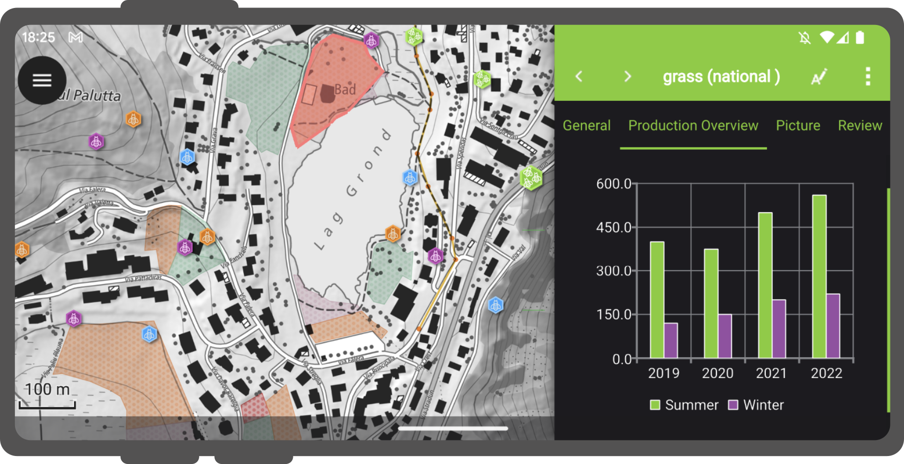
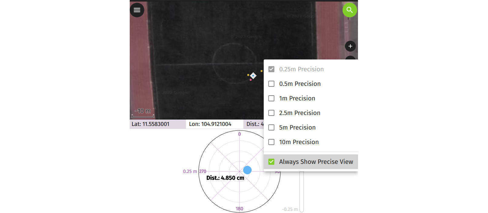
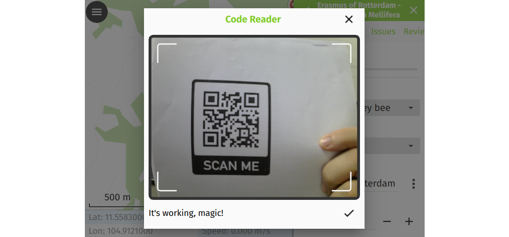
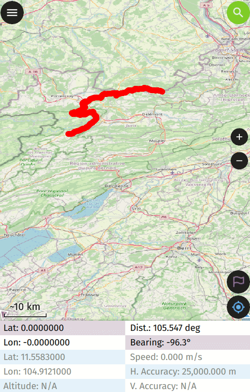

OPEN SOURCE
GEONINJAS
MADE IN
SWITZERLAND
we l[i|o]ve open source.
WHY
QFIELD?
because data is outside the office.
WHAT IS
QFIELD?
WHAT IS QFIELD?
The mobile data collection app for QGIS

WHAT IS QFIELD?
Minimalist User Interface

WHAT IS QFIELD?
Beautiful cartography

WHAT IS QFIELD?
Powerful tools

WHAT IS QFIELD?
Efficient interaction

WHAT IS QFIELD?
Beneficial integrations

WHAT IS QFIELD?
Professional hardware

SUPPORTED
PLATFORMS

OUR
HISTORY

OUR
HISTORY

GPS, TRACKING
AND NAVIGATION
GPS, TRACKING AND NAVIGATION
High Precision GNSS Integration
- Bluetooth
- UDP
- TCP
- Serial port (USB)
- Internal
GPS, TRACKING AND NAVIGATION
Subcentimeter positioning

GPS, TRACKING AND NAVIGATION
Position averaging

GPS, TRACKING AND NAVIGATION
IMU Professional game changer

GPS, TRACKING AND NAVIGATION
Tracking
GPS, TRACKING AND NAVIGATION
Set feature as destination

GPS, TRACKING AND NAVIGATION
Stakeout with precise view

EXTERNAL
SENSORS
EXTERNAL SENSORS
Example geiger sensor
EXTERNAL SENSORS
QR Code and NFC Reader

OTHER
FEATURES
OTHER FEATURES
Atlas printing
OTHER FEATURES
Opening individual datasets
OTHER FEATURES
Height profile
OTHER FEATURES
Searching for attributes and coordinates
OTHER FEATURES
Measurement tool
OTHER FEATURES
Dark mode

OTHER FEATURES
And much more…
- Geometry editing and drawing
- Dashboard widgets (QML/HTML)
- Time filter
- Rotation
OTHER FEATURES
Dashboard widgets (QML/HTML)
OTHER FEATURES
Time filter

OTHER FEATURES
Rotation
QFIELDCLOUD
Seamless fieldwork.
Seamless synchronization.

QFIELDCLOUD

QFIELD 3.0
BE PART OF YOUR
OWN APP

THANKS!
QUESTIONS?
- qfield.org | qfield.cloud
- @opengisch
- info@opengis.ch